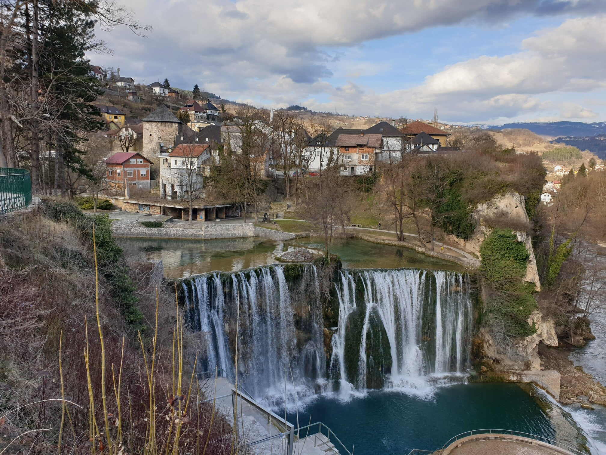
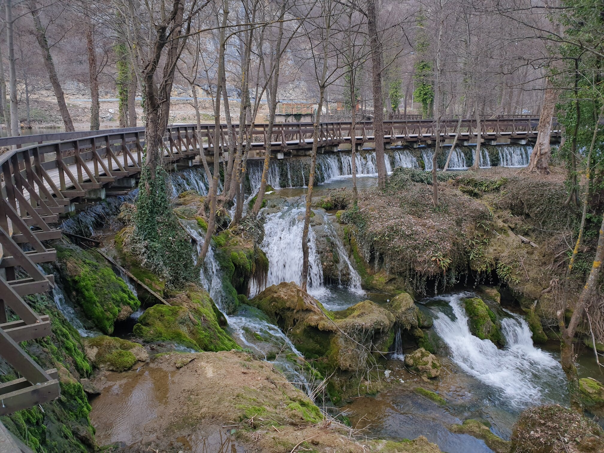
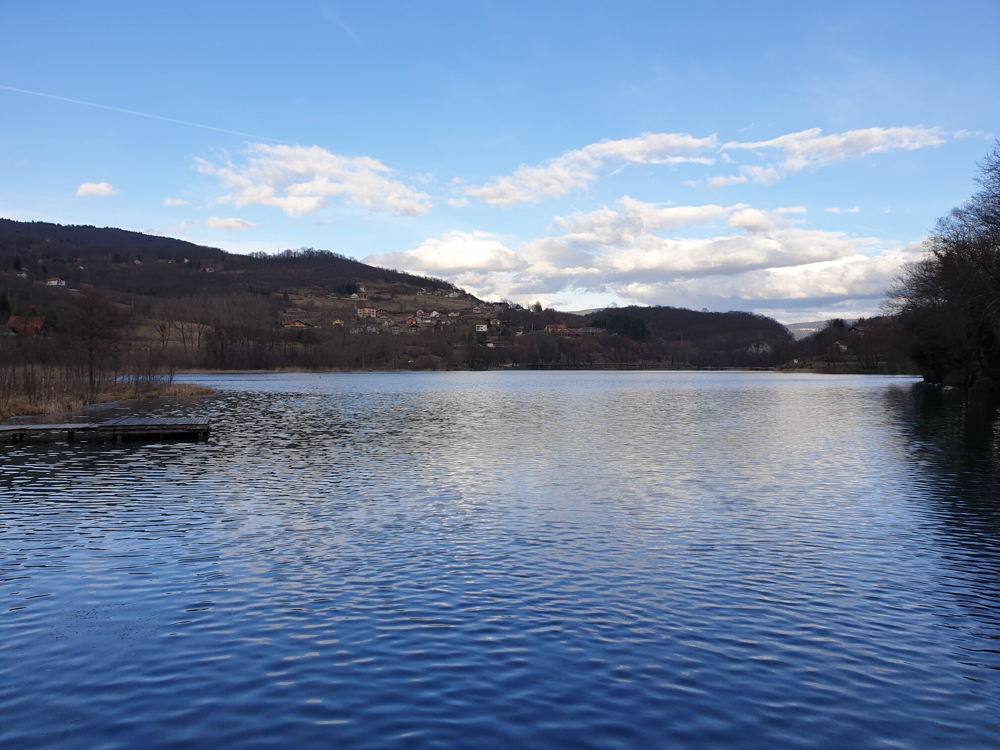
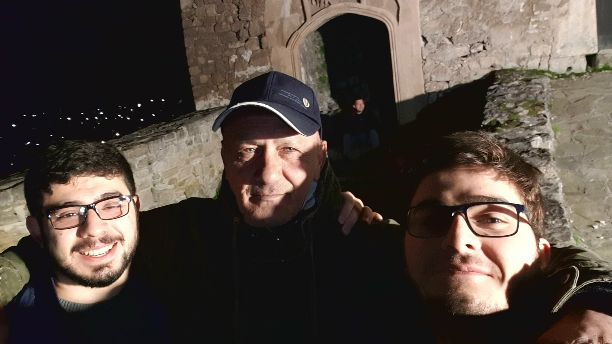
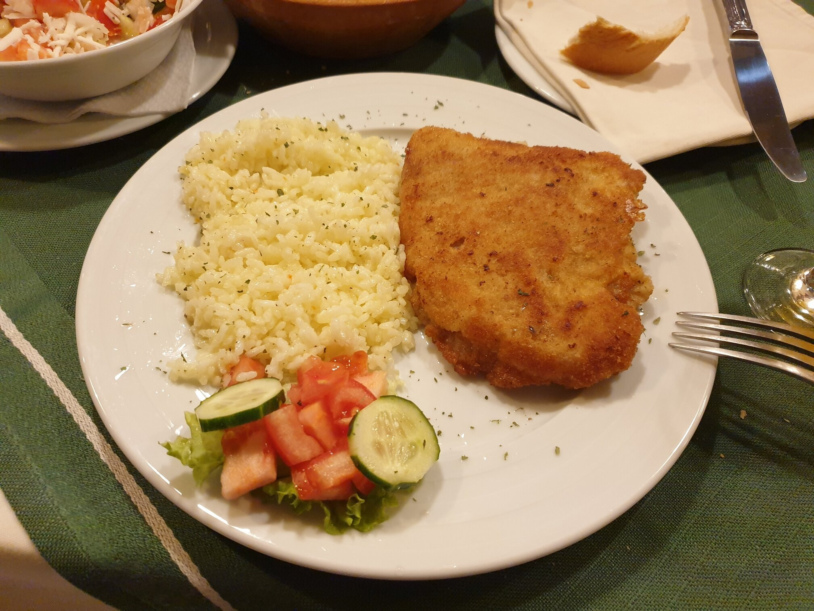

- Someone from Esma Sultan mosque recommended the hotel he was working in for dinner, which had a very nice veal schnitzel. This is the second closest hotel to the mosque.
- There is a nice option for having waffles or ice cream, which was recommended to me by the Imam of Esma Sultan mosque. When walked straightly from the mosque towards the river, the place is easy to find, named "Kinder".
Me
This is the traveller in question, me, Yusuf Kavranoglu, photographed in different countries to prove that I like travelling.
-
In Taiwan, 2023 
-
In Bosnia, 2023 
-
In Belarus, me and Lenin (me on the front), 2021 
-
In China, 2019 
Food
Places
- It is the only European city to have a waterfall located in its city center. It is a huge one.
- City center has a lot of historical buildings ranging from, of course, the castle of the city, to prison towers and to catacombs.
- Nearby Jajce, there is a very beautiful lake, which has its own waterfalls and its surroundings are very beatiful (see photos to the right).
People
Jajce is the city where my most "intimate" experience with the locals happened. Me and my friend headed to the castle of the city, however because it was off season, castle had already closed at that time (roughly 6 pm). Right next to the gates of the castle, we encountered a drinking friend group. We asked them about the castle and if it had closed, and very quickly became friends with them. They wanted to share their drinks however we were not drinking alcohol, so instead, we offered them cigarillos which cemented the friendship. We talked about a lot of things including the history of Jajce, history and political state of Bosnia and of Turkey. The group consisted of one Muslim and three Catholics, which is how they identify themselves, instead of using "Bosniak" or "Croat". Names: Luka, Muhammed, Ivan, Milan.
I also came across another group at the entrance of a small mosque in the city, while roaming the streets. They had just finished their weekly Quran recitals which they do every Monday, after the night prayer. I told them I would join them next time I'm in Bosnia. Names: Ramiz, Ishak, Mustafa, Salvadin.
Images
-
Jajce waterfall  -
Lovers Bridge  -
Lake near Jajce  -
Selfie from the gates of the castle  -
Veal schnitzel 